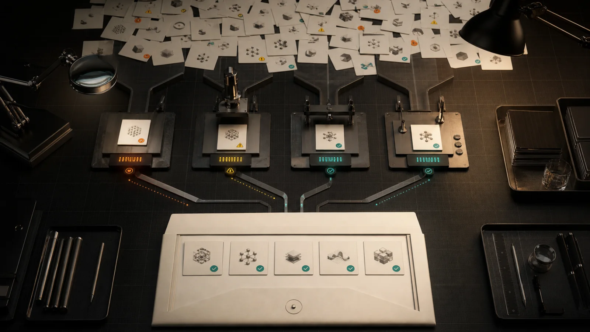
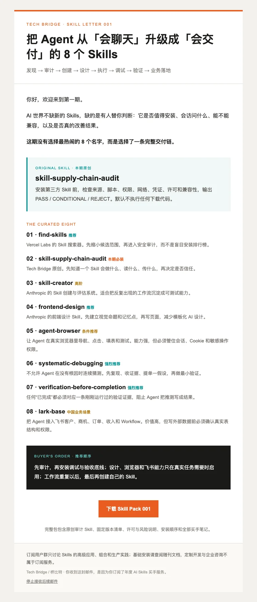

触发
知道什么时候该出现，什么时候不该出现。
一年，只跟真正值得用的能力。
每月替你从全网搜索、淘汰、审计和实测，把真正能进入工作流的 Skill，连同中文买手笔记和组合方法交到你手上。
Skill 不是一条提示词。它把触发条件、工具、步骤、权限和验收标准组成一套可复用的行动系统。
知道什么时候该出现，什么时候不该出现。
调用浏览器、代码、文档、数据库或业务系统。
把好的方法固定为可重复执行的流程。
不说“应该完成”，只交付有现场证据的结果。
它记住的不是你的隐私，而是你的方法：输出标准、工具边界、组合顺序和验收证据。当任务、模型和软件变化，Skill 也必须跟着更新。

AI 工具每天都在变化。真正稀缺的不是链接，而是知道什么值得安装、什么存在风险、什么能进入真实业务，以及它们应该如何组合。
这不是资讯摘要，而是一项持续一年的买手服务：替你承担搜索成本、试错成本和判断成本，只把经过筛选的结果交给你。
不是丢给你一堆安装地址，而是同时交付选择理由、风险边界、组合方法和实战路线。
从全球官方仓库和可追溯来源中筛选，不凑数。
说清适用场景、来源、权限、风险和使用边界。
不只会用单个 Skill，而是把它们组成完整交付链。
当现成能力不足时，交付经实践封装的原创能力。

官方或可追溯仓库，版本、维护时间和许可清楚。
检查脚本、网络、凭证、浏览器会话和对外写入。
不默认在 Claude Code、Codex 和其他 Agent 容器中等价。
必须改善真实结果，而不是只多一套仪式。
第 001 期从发现、审计、创建、设计、执行、调试、验证到业务落地，用 8 个能力串成一条完整路径。
先找到当前任务真正需要的能力。
Vercel Labs安装前检查来源、脚本、权限和风险。
Tech Bridge Original把稳定重复的工作流固化为可测试能力。
Anthropic先建立视觉方向，再写前端，减少模板化。
Anthropic让 Agent 在真实浏览器里执行和验证流程。
Vercel Labs先复现、收证据、提假设，再做最小修复。
obra / superpowers在宣告完成前，用现场证据验证结果。
obra / superpowers把客户、订单、收入和自动化落进飞书系统。
Feishu Official付款后立即收到。完整包含 8 个全球精选的买手判断，直接附带 1 个 Tech Bridge 原创 Skill，其余 7 个提供官方来源、固定版本、安装方式与审计边界。
外部 Skill 源码不重新打包，避免过时、伪造来源和许可风险。

支付成功即时发送。
至少一期，每期 5-10 个精选。
将单个能力重组为新的交付链。
不自动续费，到期由你重新决定。
微信支付回调确认后立即向订单邮箱发送。邮件附带完整 ZIP 交付包和加密下载链接。
不会。第 001 期直接附带 1 个原创 Skill；其他精选项提供官方来源、固定版本、安装命令和审计结论，不伪装成自有资产重新分发。
不是。这是持续一年的 Skill 筛选、审计和组合服务，重点是节省搜索和判断成本。
不自动续费。这次支付覆盖 365 天，到期后由你自己决定是否继续。
重复付款、系统无法交付，或付款后 7 个自然日内且首期内容尚未发送，可申请全额退款。具体以退款规则为准。
一次支付，不自动续费。立即获得第 001 期，并开始一整年的 AI Skills 买手服务。